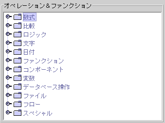
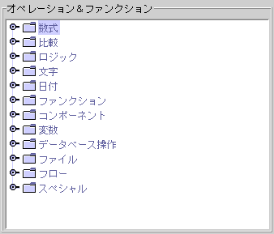
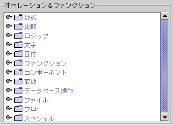
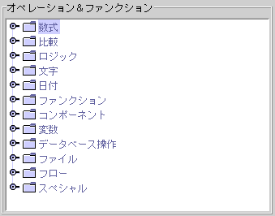

|
オペレータとファンクション (operator and function) フォーミュラのデザインパネル(formula design window) 処理済データの再生 (retrieval computed data) ファンクションのパラメーター (parameters of function) フォーミュラは(formula) は jLIVE Builder™ アプリデザインの中に主な機能を言いますと，プログラミング化可能の処理プロシージャ(programmable computing procedure)を提供できることです 。処理プロシージャ (computing procedure) の内容は： · データ処理 (data compute)：数学、比較、ロジスティック、ストリング、日期、ファンクション。 · パラメーターと変数の再生 (parameter and variable access)：System、Hash、Stack、LocalHash、SysHash、SpParam、ServletResp。 · コンポーネント操作 (component operate)：プロパティ、データの再生と設定。 · データソース操作 (data source operate)： オープンデータソース、データソース検索，記録の設定、移動、新規、編集、保存、削除。 · ファイル操作 (file operate)：ファイルのダウンロード、ファイルのコピー、ファイルとディレクトリのメインテナンス。 · 起動イベント (fire event)：イベント起動。 · アプリフローの操作 (application system flow operate)：メッセージボックス、パネル、レポート作業，パネル離れ、アプリ。 フォーミュラ (formula) は処理資料 (operand) 、運算子 (operator)、ファンクション (function) 、表現方式 (expression)，フローコントロール IF-THEN-ELSE などに組まれています。処理データは (computed data)以下のよう： · ユーザ入力或いはコンポーネントデータ(user input or component data) · システムパラメーターと変数 (system parameter and variable) · 現在データソースステートとレコードフィールドデータ (current data source state and record field data) · ダウンロードファイル (down load file) · ストアドプロシージャ回転データ (stored procedure return data) · Servlet Call 回転データ (Servlet call return data) ·
Cookie
オペレーターとファンクション (operator and function)
フォーミュラデザインパネル (formula design window)
フォーミュラの編集フォームが３つの区域に分けられ，左上は【データソース&コンポーネント】のリスティング区域 (data source & components)で，ツリーの形で表されます。右上は【オペレーション & ファンクション】のリスティング区域 (operations & functions)で ，同じくツリーの形で表されます。下は【フォーミュラ】編集区域で，デザインナーはデータとファンクションの設定を自分で行えます。

§ データソース & コンポーネント (data source & component)： · データソース (data source)： データソース８つのステータス、フォーミュラ、フィールド(record field)がリスティングされます。 o RecordNo() (record number)：今のレコード(record) のコード。 o Eof() (end of file)：今のレコードが最後かどうか (last)，転送値 1は (true)で，0 は (false) 。 o Bof() (begin of file)：今のレコードが最初かどうか (first)，転送値 1は (true)で，0 は (false) 。 o IsEmpty() (is empty)：データソース中にレコードがなく(record)，転送値 1は (true)で，0 は (false) 。 o InsMode() (insert mode)：データソースは新規 (insert mode)のモードにあるかどうか ，転送値 1は (true)で，0 は (false) 。 o UpdMode() (update mode)：データソースは編集 (insert mode)のモードにあるかどうか ，転送値 1は (true)で，0 は (false) 。 o TotalRecord()(total record)：データソースのトータルレコード数。 o
ReadOnly() (read only)：データソースは(read only)で，転送値 1は (true)で，0 は
(false)。 
· コンポーネント (components)： フォーム中のコンポーネントがリスティングされます。

· システム変数 (system variable)： ８つのグローバル変数は_sysvar1〜_sysvar8，どのフォームにでも共用されます。
 § オペレーション & ファンクション (operation and function)： フォーミュラのアイテムがリストされます。 § フォーミュラ (formula)： フォーミュラの設計枠で"ENTER"を押して下の行に行きます。 § シンテクス (syntax check)： フォーミュラのチェック。
処理済データの再生 (retrieval computed data)
プロセスデータは以下のソースから来ました。 · 常数 (constant)
· ユーザ入力とコンポーネントデータ(user input or component data)
{コンポーネント名}、GetProp("コンポーネント名", プロパティ)。
· システムパラメーターと変数 (system parameter and variable)
_sysvar1、HashGet("変数名")、SysHashGet("変数名")、LocalHashGet("変数名")。 変数 (variable)参考。
· データソースステータスとレコードフィールド (current data source state and record field data)
{データソース名:TotalRecord()}、{データソース名:フィールド名}、RecordData("データソース名","フィールド名",データレコードコード)。
· ダウンロードファイル (down load file)
Load("ファイルパス")。
· データベースのストアドプロシージャ値転送 (stored procedure return data)
GetSpOutParam("ストアドプロシージャ名.変数名")。
· Servlet Call の値転送 (Servlet call return data)
GetServletResp("イベント名.パラメーター名")。
· Cookie
GetCookie("Cookie名")。
· ファンクションの値転送 (function return data)
変数の Hashtable は３種類：
変数の Hashtable オペレーション：
フォーミュラのパラメーターとして _sysvar1 から _sysvar8まで，対処方法：
運算公式中的 Stack 是存放不具有變數名稱，而以先進後出的次序存取的資料值，通常使用於視窗模組間的參數傳遞，其操作方式：
フォーミュラで提供されたオペレーターはSTRING処理以外では使用方法が他のプログラミング使用方法とほぼ同じで左から右へとなります。 · 優先処理 ( ) · STRING処理 $ [ ] · 数字処理 + - * / % ^ · 比較処理 = <> <= >= <> · ロジスティック処理 And Or No オペレータープロセス順序 (上から下へ)
ファンクションのパラメーター (parameters of function)
ファンクションのシンタクスはファンクション名、括弧、パラメーターに組まれています。ファンクション中のパラメーターは他のファンクションで表現することが可能です。
ファンクションパラメーターに関する注意事項 · ファンクションパラメーターは他のファンクションである場合，このファンクションの中にIF-THEN-ELSEを含んではなりませんが，Condition()を使用することが可能です。 · Formula(x) のパラメーターはIF-THEN-ELSE を使用することが可能です。 · IF x THEN y ELSE z の流れコントロールにつき，その x、y、z は他のIF-THEN-ELSE であることが可能です。 · 常数をパラメーターに与える時，その常数の元スタイルフォーマットを使用しなければなりません。 · Condition(cond, true, false)，cond パラメーターに優先括弧 ( ) を使用しなければなりません。 例えば：
IF NextDate({name:生日},20,0,0)>= Today()THEN "既に20歳" ELSE "20歳未満"
NextDate の一つ目のパラメーター は{name:誕生日} のフィールド値。
例えば：(上の例のもう一つの対処方法)
Condition((NextDate({name:誕生日},20,0,0)>= Today()),"既に20歳","20歳未満")
例えば：
Date(Year(Today()), Month(Today()), 15)
ファンクション Year()，Month() 中に含むファンクション Today()。 ファンクション Date() 中に含むファンクション Year()，Month()。
Copyright © 2001~ 2004 Probe Technology Inc. . All Rights Reserved. Questions, comments, and suggestions to Service@probe.com.tw |